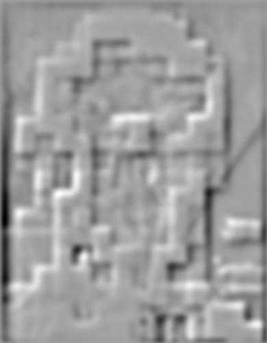
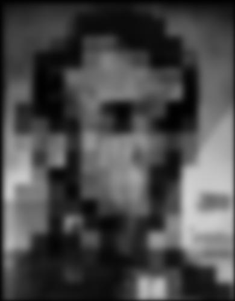
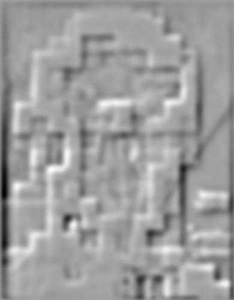
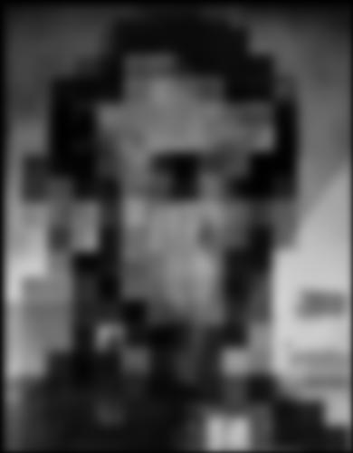
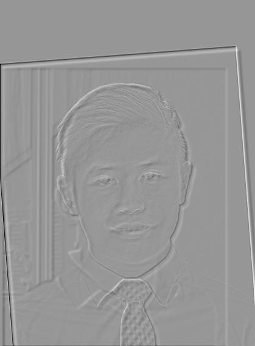
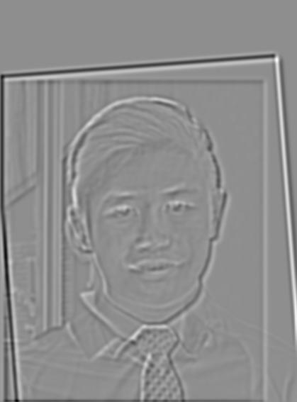

In this project, I worked with frequencies and filter techniques to create cool images!
To start this section, we experimented with the use of finite difference operator to perform edge detection. Using D_x of [1, -1], and D_y of [1, -1]T, we convolved the given image with D_x and D_y to produce 2 images. These images showed, respectively, edges within image with edges in the x and y direction. To obtain the gradient magnitude of each edge, we simply took the magnitude of each pixel by taking sqrt(x^2, y^2). To sharpen the results, we binarized the image to obtain the following result.
While this image revealed most of the edges of the cameraman, it was also noisy due to the noise in the original image. To counteract this, we performed a gaussian blur on the image to smoothen out the original image, before taking the gradient magnitude again. This yielded a much cleaner result. As seen (below), most of the noise was successfully eliminated.
We also attempted to perform a single convolution by convolving our gaussian filter with the D_x and D_y finite diference filters to create x and y gaussian filters (displayed below), before applying those filters to the image and taking the resulting image magnitude. This yielded the exact same results as before.
We also attempted to use what we learned to straighten images that might have been slightly slanted or off by a slight angle. Given the slightly slanted following image:

We wanted to find the best rotation such that it appears straightened. To do so, we searched a span of += 10 degrees, trying to find the rotation that yielded the greatest number of horizontal and vertical lines. (We assumed that this image would most likely be straightened) For each rotation, we first
1) Cropped the image to the center by eliminating a 1/2 of it's length and width on the edges.
2) Then, we generated the angle of each pixel by convolving with the finite difference filters to receive Delta_x and Delta_y, then taking hte arctan2(-Delta_y, Delta_x) to obtain each angle. This gives us a matrix of angles, ANGLES
3) Since we want to make sure that we only take angles of real edges in the image, we used our edge detection algorithm from part 1.2 to get the edges of the cropped image to get edges, and used these edges as a mask over ANGLES so we only consider angles on the edges of our image.
4) Finally, we summed the number of pixels that had angles close to 0, 90, 180, 270 or 360 (denoting horizontal or vertical edges) and scored the rotation using sum/num_pixels_considered, where num_pixels_considered is the number of nonzero pixels after applying our mask.
Since in step 4) we don't want to consider pixels with 0 values (since they denote pixels that were zeroed by our mask), we had an additional step in 2) where after computing the angles of all pixels, we changed all angles with value 0 to 360 degrees. This allows us to count pixels that were 0 before the mask. This gave us the following histograms, before and after rotation.

We also got a great rotation of -3 degrees to give us the straightened image:

We tried this on a few more images to great results:

Others:

Among the 4 images, the 3rd image was particularly successful in achieving a good rotation. This could be due to the guiding grid lines in the background that helped orientate the photo to a natural x-y alignment. The failure case is the last image shown of a pagoda among greenery. While the original image was fairly straight, the image straightening algorithm seemed to slant the image slightly. This might be due to the sparisty of edges in the middle of the image (which is mostly sky), which made it hard for the algorithm to align any x and y edges.
In this part of the project, we took images and attempted to sharpen them. The broad goal here is to increase high frequencies in the image. To do so, we wrote a high-pass filter function, which subtracts low frequencies (obtained through our gaussian (low pass) filter) from the original image to leave only high frequencies. We managed to obtain some good results here:
Images displayed are sharper, slightly brighter and show better contrast. We also tried the same thing with an originally sharp image by blurring and sharpening it again.
Regular, Blurred and Resharpened respectively. Although the blurring is not obvious, the sharpening can be noticed in the grains of rice and contours of the food of the plate.
For this section on Hybrid Images, we attempted to obtain 'hybrid images' which look different from near and afar. This effect is achieved by blending the high frequencies of one image with the low frequencies of another. Since we perceive different frequencies at different distances, the resulting hybrid image would look like the high frequency when near, and be discernable as the low frequency image from far.
I produced 2 sets of hybrid images below, one which shows a change of expression, and the other to show a change of textures.
For the hybrid faces image, we can view the process by performing a frequency analysis on the log magnitudes of the fourier transform of each image.
Original Images:
Filtered Images (low, high):
Hyrbid Image
It was difficult to achieve a success for the provided demo images of Derek and Nutmeg, as it was tough aligning the photos and achieving the same juxtaposition on the website. The image was also not smoothly blended into the face, and I consider it a failure case.
In this part of the project, we implement a gaussian and laplacian pyramid to reveal layers of the image at different frequencies. To implement my Gaussian stack, I used a sigma of 1. For each layer, I obtained a new layer by doubling sigma and convolveing the previous layer with my Gaussian kernel. To implement my Laplacian stack, I did a similar thing where at each layer, I computed a new gaussian layer. However, the Laplacian layer is the differences between the gaussian layer on layer n and n+1. The final layer was the remaining gaussian layer, which accounts for all the lower frequencies I could not reach.
I used the gaussian stack on the Dali painting, and applied the laplacian stack on the Dali painting and on my faces image from above and got the following results.
Lincoln (Gaussian Stack)
Lincoln (Laplacian Stack)
 



Faces (Laplacian Stack)
 In this part of the project, we implement a blending algorithm that attempts to join 2 images across a smoth transitional line. To do this, we used the algorithm from Burt and Adelson's 1983 paper.
1) Align the images to get 2 images of the same size and rough alignment
2) Then, we generated laplacian pyramids for each image of depth 10.
3) Create an image 'mask' which defines the boundaries between 2 images. We create a gaussian stack from this mask, which helps blur the boundaries of each image to a different degree at different levels.
4) We assmble a new stack by summing the layers of each image (A and B) multiplied by the mask for that layer. That is, for layer x, Result_x = A_x(Mask_x) + B_x(1 - Mask_x)
5) Finally, to get our blended image, we sum all layers of result to get a final image.
In experimenting with the Oraple, we weren't able to achieve a blending as smooth as on the website. The much brighter hue of the orange and darker hue of the apple made the boundary very apparent. Even when experimenting with additional layers (up to 50) and different values of sigma, we were unable to achieve a great result.
With other images, however, our results were much better!
For the 2 images above, we achieved
The first image worked better due to the similarity in contrast between the moose's face and the dogs body, compared to the whiteness of the dogs face on the moose' brown body.
For the 2 images above, we achieved
To illustrate the process, we see each layer of our laplacian stacks (multiplied by the filter) and their sum
Level 1:
Level 2:
Level 3:
Level 4:
Level 5: